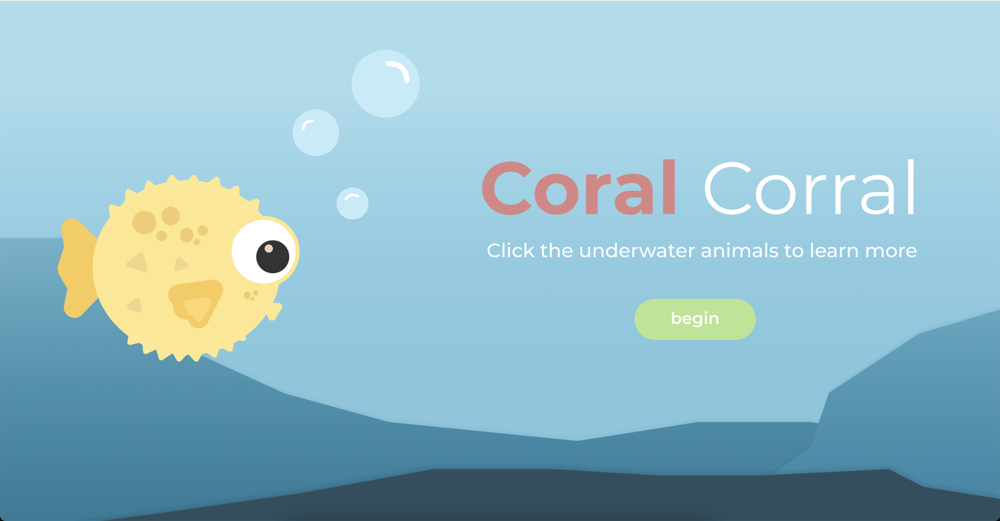

An interactive website that showcases sea creatures and ocean facts through an engaging, clickable interface. Built in collaboration with designers who provided assets and layout direction—I handled the web implementation and interactivity.
Developed the frontend structure, animations, and interactive elements so users can explore different species and discover fun facts. Integrated designer-supplied graphics into a responsive, performant layout. Balanced playful visual design with clean, maintainable code.
HTML, CSS, JavaScript
